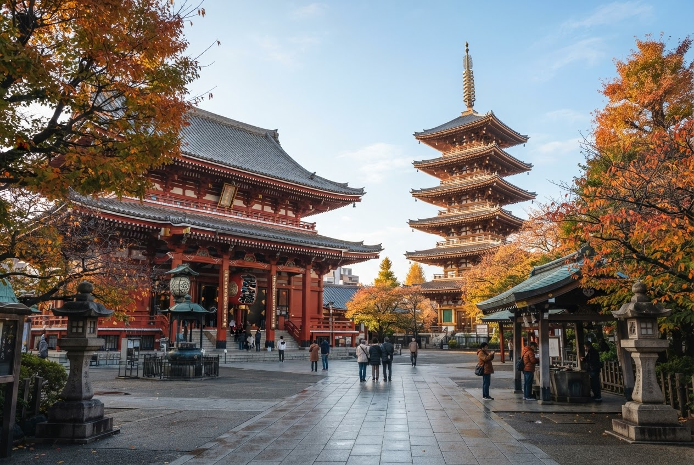

1 Building your itinerary
15:54

Tokyo together

Tokyo, Japan
Nov 7–10, 2026
4 days together · Rough plan, not activity bookings
Building your itinerary…
Bringing everyone's favourites together into four easy days in Tokyo.
CGK
All 3 members finished swiping- Group likes collected
- Finding nearby places
- Leaving room to explore
A rough plan, made for your group. You can edit any day once it's ready. Activities won't be booked.
2 Itinerary: Day 1
15:54
Tokyo together
Tokyo · Nov 7–10, 2026
Built from 3 members' swipes
CGK
8 places4 days
¥14,750Est. / person
50 minAvg travel / day
Day 17 Nov
Day 28 Nov
Day 39 Nov
Day 410 Nov
Rough plan · Estimates only. Flights, hotel and Maybe places are excluded.
DAY 1 · 7 NOVEMBER
Arrive & settle in
Afternoon · Arrive in Tokyo
Picked flight · Arrival
SHAHND
Sat 7 Nov · 11:20–15:15 local
Clara · CX500 · 11:20 CST → 15:15 JST
Late afternoon · Settle in
Check in, unpack and rest. No activity planned.
Evening
Neighbourhood ramen
1 hr · ¥1,500
A warm bowl near your hotel.
Suggested for this dayEvening
¥2,500 / person · 2 hrs incl. travelIncludes ¥1,000 transport allowance · 60 min travel
3 Itinerary: Days 2 and 3 (scrolled)
15:54
Tokyo together
DAY 2 · 8 NOVEMBER
Old Tokyo & lively lanes
Morning
Sensō-ji & Asakusa
1.5–2 hrs · ¥0 entry · ¥1,000 extras
Temple courtyards & Nakamise small shops.
3 of 3 liked thisMorning
Afternoon
Ueno Park & cafés
1.5 hrs · ¥1,000
Autumn paths and a cosy café stop.
Suggested for this dayAfternoon
Evening
Akihabara & dinner
1.5 hrs · ¥2,500
Arcades, glowing streets and casual dining.
Suggested for this dayEvening
¥5,000 / person · 5 hrs 40 min incl. travelIncludes ¥500 transport allowance · 40 min travel
DAY 3 · 9 NOVEMBER
Market mornings, city evenings
Morning
Tsukiji Outer Market
1–1.5 hrs · ¥2,000–3,500
Fresh seafood bowls & warm tamagoyaki.
2 of 3 liked thisMorning
4 Itinerary: Day 4 and Maybe
15:54
Tokyo together
DAY 4 · 10 NOVEMBER
A gentle goodbye
Morning
Slow breakfast & packing
1 hr · ¥1,000
Take it easy before heading to the airport.
Suggested for this dayMorning
Late morning · Airport check-in buffer
Picked flight · Departure
HNDSHA
Tue 10 Nov · 15:35–17:30 local
Clara · CX6321 · 15:35 JST → 17:30 CST
¥2,000 / person · 2 hrs incl. travelIncludes ¥1,000 transport allowance · 60 min travel
Maybe · Split votes
Not scheduled or included in totals.
Shinjuku Gyoen1 of 3 liked · 1.5–2 hrs · ¥500 entry
›Omotesando stroll1 of 3 liked · 2 hrs · ¥1,000–3,000 café stop
›Budget midpoint includes ¥3,000 transport over 4 days. Flights, hotel, Maybe places, unplanned meals, shopping and extras are excluded.
5 Place sheet (opens over the itinerary)
15:54
Tokyo together
Tokyo · Nov 7–10, 2026
Built from 3 members' swipes
CGK
8 places4 days
¥14,750Est. / person
50 minAvg travel / day
Day 17 Nov
Day 28 Nov
Day 39 Nov
Day 410 Nov
Rough plan · Estimates only. Flights, hotel and Maybe places are excluded.
Day 2 · Morning

Sensō-ji & Asakusa
Asakusa · Taito City
Step through the lantern gate, explore temple courtyards and browse Nakamise's small shops.
EST. BUDGET / PERSON¥0 entry · ¥1,000 extras
DURATION · BEST TIME1.5–2 hrs · Morning
Good to know
- Arrive early for quieter courtyards and photos.
3 of 3 liked this
Clara (you)Liked
GaudiLiked
KabeLiked
Back to itinerary
6 Group details (itinerary ready)
15:54
Tokyo together
Tokyo, Japan
Nov 7–10, 2026
3 members · SHA, HKG, SIN
Your Tokyo itinerary is ready
Four easy days built from everyone's swipes. Edit any day before you go.
A rough plan · Activities aren't bookedView itinerary